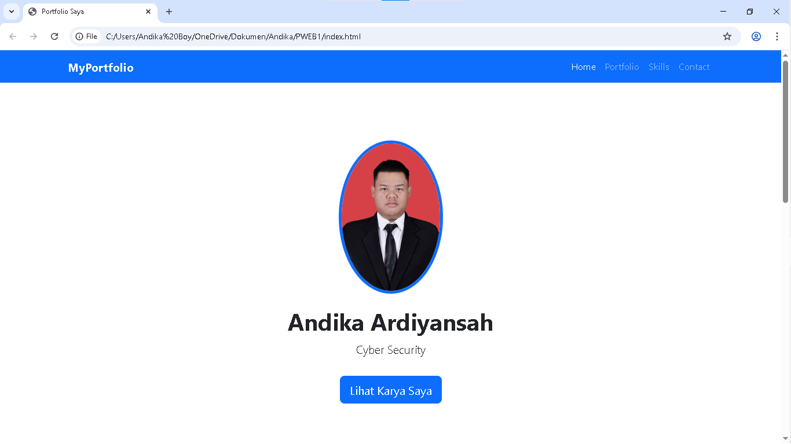
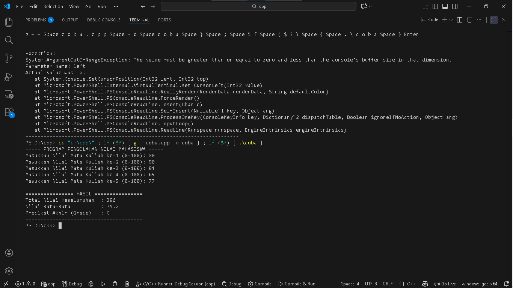
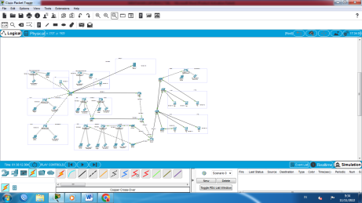
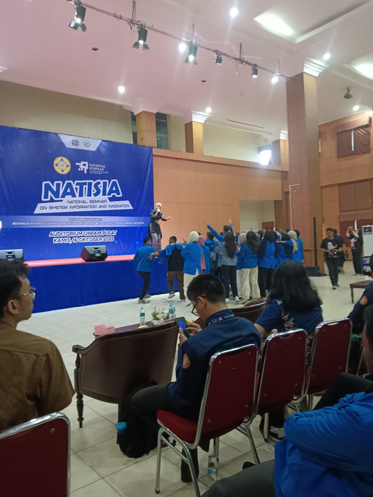
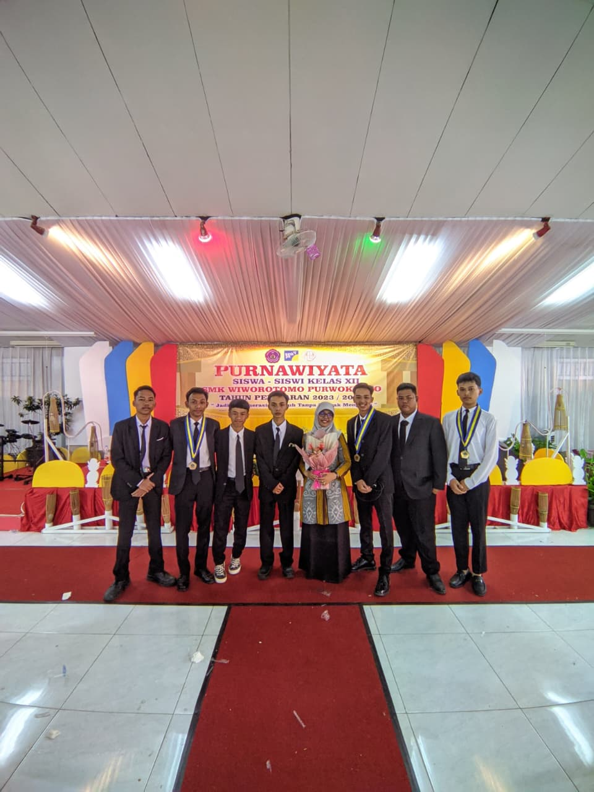
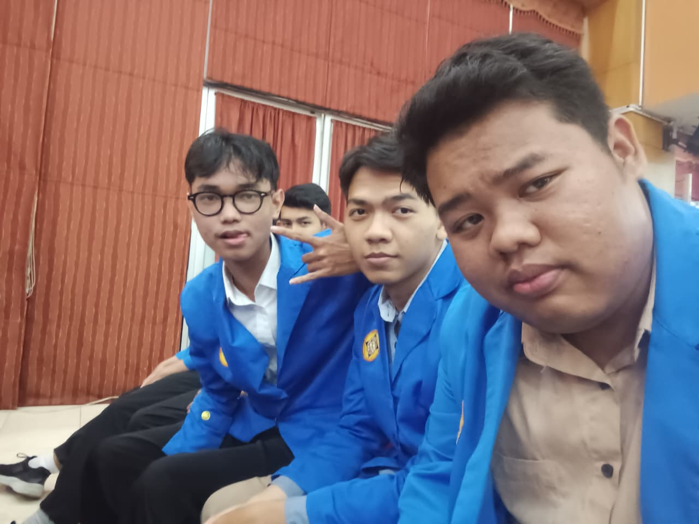

Halo, Saya Andika Ardiyansah.
Membangun masa depan teknologi dengan kode yang bersih dan aman.
Profil Saya
"Saya adalah mahasiswa semester 1 yang memiliki ketertarikan mendalam pada Cyber Security dan Web Development. Saya lulusan SMK TKJ yang kini sedang menempuh pendidikan tinggi untuk memperdalam logika pemrograman dan sistem informasi."
Nama Lengkap:
Andika Ardiyansah
Universitas:
Universitas Pamulang
Fakultas / Prodi:
Ilmu Komputer / Sistem Informasi
Minat Utama:
Cyber Security & Web Design
Domisili:
Purwokerto
Project Saya

Website Portofolio
Project UAS membuat website dinamis dengan HTML, CSS, JS.

Aplikasi Kasir (C++)
Program penghitung total belanja sederhana menggunakan C++.

Desain Jaringan TKJ
Simulasi topologi jaringan menggunakan Cisco Packet Tracer.
Galeri & Dokumentasi

Dokumentasi Seminar

Sertifikat Kelulusan

Foto Bersama Tim
Video Bersama Teman
🎵
Rekaman Cover Lagu
Dokumen Portofolio